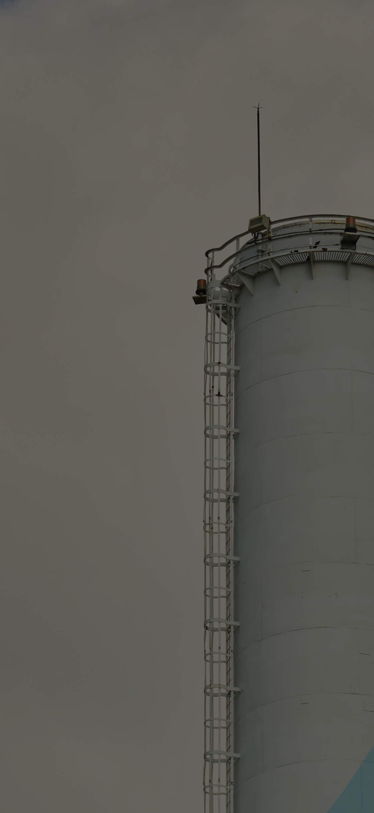
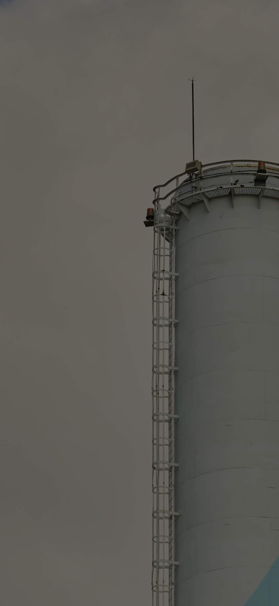

Values Miracom delivers Smart Factory Capabilities
 



Since 1998
Smart Factory Leader
in Korea
Beyond Korea,
Reaching out Worldwide
Smart Factory Experts
Chosen by Industry Leaders
World’s Best Smart Factory
Solution Provider
Why Miracom?
Why Miracom?
25 years of shaping
the future of manufacturing
-
- NO.1
-
World-proven Capabilities
We are the only Asian company to be listed
in Gartner's MES Magic Quadrant (MQ) Report,
winning recognition for our smart factory expertise and capabilities.
-
- 1,000professionals
-
No.1 Expert Group in South Korea
With the largest number of smart factory experts in Korea,
we are doing our best to satisfy our customers
by continuously conducting research and development to build optimal smart factories.
-
- 21industries
-
Extensive Industry Coverage
As our Best Practices (BPs) cover most industries
— 21 out of 25 — we can deliver industry-specific solutions
tailored to each customer.

20+
20+ countries
350+
350+ Domestic and overseas references
70,000+
70,000+ machines’ interfacing covered700+
700+ types of machine interfaces applied
93 % *
The proportion of IT experts among employees*As of January, 2023

25+
25 years of experience
100+
More than 100 overseas factoriesMiracom’s Values
Miracom's advanced technology transforms factories
to accomplish the 4th Industrial Revolution and
manufacturing process automation/intelligence.
Factory connected
via a single platform
Collecting, analyzing, and sharing shop floor data in real time
allow the generation of a single set of goals
and improvement strategies which, in turn, leads to manufacturing productivity.
1
Smart factory
at a glance
Real-time monitoring of visualized management
and manufacturing status quo generates a visible factory operation system
that can promptly help customers identify problems and make decisions.
2
Profit-making Factory at optimal production sites
An optimal smart factory is made possible thanks
to the effective utilization of 4M enabled
by minimizing human variability and waste elements.
*4M : Man, Machine, Material, Method
3
Factory enabling autonomous and unmanned production
By applying the core technologies
of the 4th industrial revolution (AI, IoT, Digital Twin),
the autonomous factory is realized
through unmanned and intelligent manufacturing technologies.
4
Customer Success Stories
Global industry leaders
step up with Miracom
-

- Year 2022
- A domestic manufacturer of core materials for secondary batteries has applied Miracom's MES solution to all manufacturing plants nationwide since 2019, collecting equipment data by linking 44 machines and establishing an integrated management system by linking WMS and SAP to connect material input and shipment information. In particular, equipment-specific cycles, maintenance tasks, and tooling management functions tailored to the industry's characteristics have been incorporated, enabling lifecycle management and predictive maintenance capabilities for tooling and equipment. In addition, physical-based material location management and logistics movement minimization through smart factory have improved work efficiency.
- #MES #WMS #PLC

- Year 2022
- The customer, a global footwear manufacturing company, implemented MES for 31 manufacturing lines and built an integrated system that reflects the characteristics of the overseas shoe industry based on standard processes. The customer, which has increased productivity by establishing SCM production plan-based work/dispatch order management, set shoe management, and quality control functions, plans to spread smart factories to its second and new factories overseas based on its continuous trust relationship with Miracom.
- #SCM #MES
- Year 2022
- A company with the largest share of solar modules in the global market implemented factory automation and a high-speed data non-stop processing system to counter global factory labor shortage. The firm also set up a globally integrated control system for sending and combining distributed manufacturing data into the headquarters, enabling stable operation of factories around the world.
- #MES #EAI #Machine Automation
- Year 2022
- A leading maker of Korean food, or K-food, built smart factory by applying MES and HACCP (food safety management certification) to the entire manufacturing process, including noodles, packaging, and soup. By linking data from more than 300 machines, the company established a recipe management and weighing automation system for noodle lines such as bagged noodles, containerized noodles, and dry noodles, soup mixing and packaging, and automated KPI (performance indicator) analysis, HACCP management, automated operation data collection, automatic calculation of process inspection efficiency, and inspection logs. Consequently, the firm could benefit from real-time inspection of defect tracking and cause analysis, which are the most crucial factors in the food industry. It also elevated their standing as a leader in the global food industry with rigorous safety management even for food exported overseas.
- #MES #QMS #MC #WMS #Logistics Automation

- Year 2021
- Miracom implemented an ERP system for a customer that produces reducers for precision control used in robotic arms, and through the interconnection between systems, they increased production by 30%, reduced defect rate by 70%, and achieved a 91% delivery compliance rate, and grew into a company that provides high-quality products.
- #MES #ERP
-